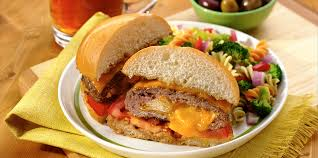

bone grilled into a mozerella or cheadar quesadilla to a crispy perfection
olives and toped off with sour cream

AppleBee's is a neighborhood grill and bar. We serve anywhere from Mexican cuisine to tradition style bar-b-q style cooking.
| Appetizers | Description | |
|---|---|---|
| Brisket Quesadilla | Our famous smoked brisket pulled off the bone grilled into a mozerella or cheadar quesadilla to a crispy perfection |
|
| Chips and Salsa | A generous portion of tortilla chips with crisp salsa | |
| Breadsticks with Alfredo Sauce | Breadsticks baked to perfection with a side of creamy alfredo sauce | |
| Neighborhood Nachos | Perfect cheesy nachos for the while table covered in cheese, tomatoes, lettuce, olives and toped off with sour cream |
|
| Chicken Wonton tacos | Tacos stuffed with our freshly grilled pork or beef with onion rings and tomatoes. | |
| Burgers | ||
|---|---|---|
| Whiskey Bacon Burger | Premium beef grilled with Jack Daniel's Tennessee Whiskey | |
| Cheadar Cheese Burger | 3 Cheadar Cheese melted over a beef patty |  |
| Triple Bacon Burger | 3 hearty portions of maple wood bacon over a sizzly beef patty | |
| Brunch Burger | In case you missed breakfeast, you in luck. This burger contains a classic beef patty topped with a sunnyside up egg |
|
| Classic Burger | The Classic Burger served with or whithout cheese. |
| BBQ and Steaks | ||
|---|---|---|
| Half Stack Double Glazed baby Back Ribs | A generous portion of our smoked ribs | |
| BBQ Brisket Tacos | Pulled Brisket on tacos served with or without sour cream | |
| 8 OZ Top Sirloin | A savory steak with butter and mashed potatoes. |  |
| 6 OZ Top Sirloin | A smaller yet just as savory steak served with mashed potatoes |  |
| BBQ Chicken Sandwinch | The famous chicken sandwinch made even better. Chicken with melt in your mouth pulled pork |
| Chicken and Salads | ||
|---|---|---|
| Crispy Chicken Tender Salad | Our popular chicken salad | |
| SouthWestern Chicken Salad | Chicken salad with a twist of flavor containing lime, peppers, and a variety of spices. | |
| Fiesta Lime Chicken | NEW! This new dish is freshly grilled chicken marinated in lime juice | |
| Bourbon Street Chicken | Chicken, Shrimp, and potatos all in one dish topes with BBQ sauce | |
| Chicken Tenders Plate | A classic plate with grilled or fried tenders served with a side of fries |